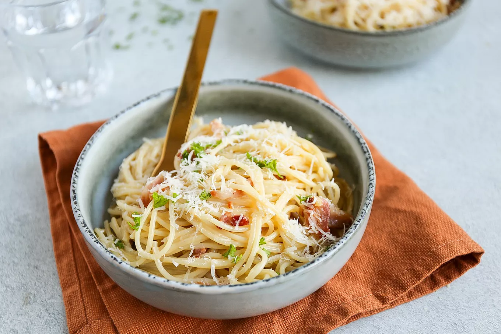

Heerlijk Pasta carbonara

Ingredienten
- 4 eieren
- 200g spek
- grof zout en peper
- 150g pecorino
- 150g pasta (naar keuze)
Bereiding
- Kook het water van de pasta en voeg zout toe.
- Wanneer het water kookt voeg de pasta naar keuze toe voor het tijdsduur dat vermeld is op de verpakking van de pasta.
- Bak het spek in een pan.
- Scheid het eigeel van het eiwit en giet het eigeel in een kom;
- Roer het eigeel tot een geheel en voeg gedeeltelijk kaas toe tot een verdikte mix, voeg peper naar smaak.
- Wanneer de pasta gekookt is en je het water hebt weggegoten voeg het eigeel mix gedeeltelijk samen met de pasta op een laag vuurtje.
afwerking en presentatie
- Serveer de pasta mooi in een bord en sprinkle het spek erover heen met wat extra kaas.
- Geniet er van!